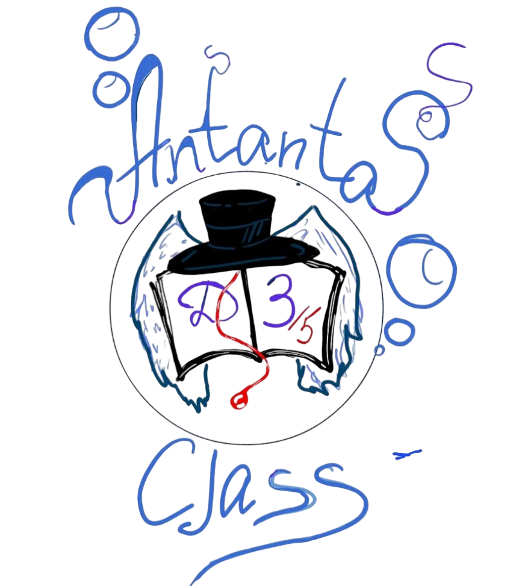

На нашем сайте Вы можете:
1.Создание заданий: Учителя могут добавлять задания с описаниями, сроками выполнения и
возможными файлами (например, презентациями или текстами).
2.Система уведомлений: Уведомления для учеников о новых заданиях и сроках их выполнения.
3.Оценивание работ: Учителя могут оценивать выполненные задания и предоставлять комментарии.
4.Прикрепление файлов: возможность загрузки файлов, связанных с заданиями
5.Статистика: Отчеты о выполнении заданий, которые помогут учителям отслеживать прогресс учеников.